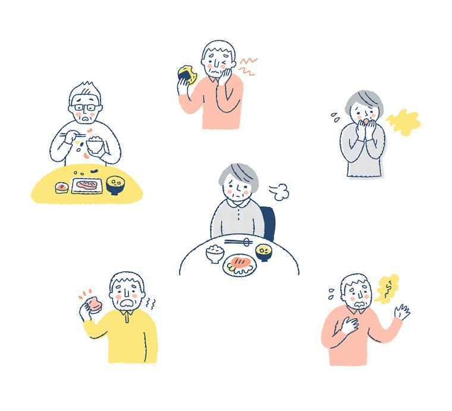
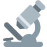

附 · 持续关注


进食障碍领域，可以关注的公众号
扫码或在微信里搜索名称。科普、招募、培训信息很多都只发在公众号里。
ED Healer
同辈支持组织：亲历者故事、科普、志愿招募
上海市精神卫生中心
官方号：进食障碍门诊、培训、热线志愿者
北京大学第六医院
官方号：进食障碍门诊与诊疗科普
精神卫生686
精神卫生科普，常有进食障碍专题
Pearl的不焦虑实验室
亲历者视角的进食问题与情绪科普
格致论道讲坛
收录李雪霓医生进食障碍演讲
咨询师可以站在哪里？
以进食障碍为切口——MAP 学生的实践资源与深耕路径
疾病认知 · 一个个案 · 实践资源 · 个案与培训 · 互动推荐
25MAP 贺凡铭 ｜ 2026.11
从“一个病”出发，走到“一条路”：先理解疾病，再看见缺口，最后找到自己的实践入口。
核心是进食行为、以及对体形体重的评价持续紊乱，并造成显著的身心功能损害 (American Psychiatric Association [APA], 2022)
限制摄入、显著低体重，对增重强烈恐惧，体像障碍。
反复暴食，并伴催吐、过度运动等不恰当补偿行为。
反复暴食、失控感与明显痛苦，不以规律补偿为特征。
因感官敏感、害怕呛噎呕吐等限制进食，与体像无关。
易感因素 × 诱发因素让疾病发生，自我强化的恶性循环让它持续存在 (Culbert et al., 2015; Stice, 2002)
模特群体部分综合征检出率高于同龄对照 (Preti et al., 2008)
↺ 补偿之后再次节食，循环闭合
带着这个框架，我们来看一个真实的个案

个案概念化是需要通过结构化评估逐一验证的工作假设，而不是结论。
BMI < 15 在 DSM-5-TR 中属“极重度”范畴 (APA, 2022)。
低体重来访者的第一步是医疗评估：心率、血压、电解质、再喂养风险 (Westmoreland et al., 2016)——不是先谈“意义”。
气质特点（完美主义、焦虑、低自尊）、家族史、所处环境中的体形文化。
评估时留意：非典型人群更容易被漏诊。
起病时间点、青春期身体变化、学业与关系事件。
追问“第一次开始控制进食，是在什么时候？”
求助动机、可用的关系资源——这是建立工作联盟的起点。
这让我意识到：这个病的难，不只在一个人身上。
从一个家庭，看到更多家庭：这个病的分量到底有多重？
影响的不只是饮食，而是身体、心理、生活和整个家庭系统。
神经性厌食症的标准化死亡率约为同龄人的 5.9 倍；约 1/5 的死亡与自杀有关 (Arcelus et al., 2011)。
心动过缓、电解质紊乱、骨量减少、内分泌与生殖功能受损，部分需紧急医疗处理 (Westmoreland et al., 2016)。
焦虑障碍共病最高可达 62%，心境障碍最高可达 54%，并与自伤、物质使用相关 (Hambleton et al., 2022)。
生活质量下降，年均医疗费用比一般人群高 48% (van Hoeken & Hoek, 2020)。
照护者普遍报告较高的照护负担、痛苦、焦虑和抑郁，并影响整个家庭的运转 (Anastasiadou et al., 2014)。
✳️厌食症长期随访：约半数痊愈、约 1/5 转为慢性 (Steinhausen, 2002)；22 年随访时约 63% 康复 (Eddy et al., 2017)。
✳️基本认知不是终点，它让我们看清一条链：特点决定了危害，危害决定了周期，周期暴露了缺口。
患者常不觉得自己病了，求助晚；社区个案中只有约 23% 寻求过进食障碍专门治疗 (Hart et al., 2011)。
身体与心理相互恶化，家庭被卷入（见上页）。
需要连续的医疗、心理、营养与家庭支持 (Treasure et al., 2020)，复发常见。
国内只有少数中心设专科病房和治疗团队 (高可婧, 2025)；北大六院年住院人数从 2003 年 20 余人增至 2023 年近 300 人，仍需候床 (李雪霓, 2026)；全球同样存在巨大治疗缺口 (Kazdin et al., 2017)。
对社会，这是缺口；对一个新手咨询师，这是方向。
一日三餐无法回避，症状每天都会被触发，无法像其他困扰一样暂时搁置。
进食牵连营养、情绪、家庭关系与学业工作，一旦失衡会波及整体生活。
需要连续的医学、心理与营养支持；青少年的早期识别尤为关键。
原则：在受训和督导下工作，医学风险优先，做团队里的一员，不单打独斗。
按 医院 / 科研 / 志愿与公益 / 专项培训 分类。点开卡片，查看准入条件、优势和官方链接。
信息核实于 2026-11-10；“往期”表示当前未见新一轮通知，报名前请以官方渠道为准。完整清单可在最后一页下载 PDF。
从进食障碍这个小领域出发，同样的四类入口适用于所有议题。
门槛相对较低，能直接接触真实需求
规范的临床环境与系统化培训

参与课题，积累评估与研究经验
持续学习，保障实践的规范与安全
四条渠道并行 · 兼职投入 · 线上线下灵活结合
新手最大的难题是“没有个案”。下面这些项目把培训、个案和督导绑在一起。卡片上标明了个案从哪里来。
扫码或在微信里搜索名称。科普、招募、培训信息很多都只发在公众号里。
同辈支持组织：亲历者故事、科普、志愿招募
官方号：进食障碍门诊、培训、热线志愿者
官方号：进食障碍门诊与诊疗科普
精神卫生科普，常有进食障碍专题
亲历者视角的进食问题与情绪科普
收录李雪霓医生进食障碍演讲
American Psychiatric Association. (2022). Diagnostic and statistical manual of mental disorders (5th ed., text rev.). https://doi.org/10.1176/appi.books.9780890425787
American Psychiatric Association. (2023). The American Psychiatric Association practice guideline for the treatment of patients with eating disorders (4th ed.). https://doi.org/10.1176/appi.books.9780890424865
Anastasiadou, D., Medina-Pradas, C., Sepulveda, A. R., & Treasure, J. (2014). A systematic review of family caregiving in eating disorders. Eating Behaviors, 15(3), 464–477. https://doi.org/10.1016/j.eatbeh.2014.06.001
Arcelus, J., Mitchell, A. J., Wales, J., & Nielsen, S. (2011). Mortality rates in patients with anorexia nervosa and other eating disorders: A meta-analysis of 36 studies. Archives of General Psychiatry, 68(7), 724–731. https://doi.org/10.1001/archgenpsychiatry.2011.74
Atwood, M. E., & Friedman, A. (2020). A systematic review of enhanced cognitive behavioral therapy (CBT-E) for eating disorders. International Journal of Eating Disorders, 53(3), 311–330. https://doi.org/10.1002/eat.23206
Culbert, K. M., Racine, S. E., & Klump, K. L. (2015). Research review: What we have learned about the causes of eating disorders – A synthesis of sociocultural, psychological, and biological research. Journal of Child Psychology and Psychiatry, 56(11), 1141–1164. https://doi.org/10.1111/jcpp.12441
Eddy, K. T., Tabri, N., Thomas, J. J., Murray, H. B., Keshaviah, A., Hastings, E., Edkins, K., Krishna, M., Herzog, D. B., Keel, P. K., & Franko, D. L. (2017). Recovery from anorexia nervosa and bulimia nervosa at 22-year follow-up. The Journal of Clinical Psychiatry, 78(2), 184–189. https://doi.org/10.4088/JCP.15m10393
Fairburn, C. G., Cooper, Z., & Shafran, R. (2003). Cognitive behaviour therapy for eating disorders: A “transdiagnostic” theory and treatment. Behaviour Research and Therapy, 41(5), 509–528. https://doi.org/10.1016/S0005-7967(02)00088-8
Hambleton, A., Pepin, G., Le, A., Maloney, D., National Eating Disorder Research Consortium, Touyz, S., & Maguire, S. (2022). Psychiatric and medical comorbidities of eating disorders: Findings from a rapid review of the literature. Journal of Eating Disorders, 10, Article 132. https://doi.org/10.1186/s40337-022-00654-2
Hart, L. M., Granillo, M. T., Jorm, A. F., & Paxton, S. J. (2011). Unmet need for treatment in the eating disorders: A systematic review of eating disorder specific treatment seeking among community cases. Clinical Psychology Review, 31(5), 727–735. https://doi.org/10.1016/j.cpr.2011.03.004
Kazdin, A. E., Fitzsimmons-Craft, E. E., & Wilfley, D. E. (2017). Addressing critical gaps in the treatment of eating disorders. International Journal of Eating Disorders, 50(3), 170–189. https://doi.org/10.1002/eat.22670
Lock, J., & Le Grange, D. (2013). Treatment manual for anorexia nervosa: A family-based approach (2nd ed.). Guilford Press.
Morgan, J. F., Reid, F., & Lacey, J. H. (1999). The SCOFF questionnaire: Assessment of a new screening tool for eating disorders. BMJ, 319(7223), 1467–1468. https://doi.org/10.1136/bmj.319.7223.1467
National Institute for Health and Care Excellence. (2017). Eating disorders: Recognition and treatment (NICE Guideline NG69). https://www.nice.org.uk/guidance/ng69
Preti, A., Usai, A., Miotto, P., Petretto, D. R., & Masala, C. (2008). Eating disorders among professional fashion models. Psychiatry Research, 159(1–2), 86–94. https://doi.org/10.1016/j.psychres.2005.07.040
Steinhausen, H.-C. (2002). The outcome of anorexia nervosa in the 20th century. American Journal of Psychiatry, 159(8), 1284–1293. https://doi.org/10.1176/appi.ajp.159.8.1284
Stice, E. (2002). Risk and maintenance factors for eating pathology: A meta-analytic review. Psychological Bulletin, 128(5), 825–848. https://doi.org/10.1037/0033-2909.128.5.825
Stice, E., Shaw, H., Burton, E., & Wade, E. (2006). Dissonance and healthy weight eating disorder prevention programs: A randomized efficacy trial. Journal of Consulting and Clinical Psychology, 74(2), 263–275. https://doi.org/10.1037/0022-006X.74.2.263
Treasure, J., Duarte, T. A., & Schmidt, U. (2020). Eating disorders. The Lancet, 395(10227), 899–911. https://doi.org/10.1016/S0140-6736(20)30059-3
Treasure, J., & Nazar, B. P. (2016). Interventions for the carers of patients with eating disorders. Current Psychiatry Reports, 18(2), Article 16. https://doi.org/10.1007/s11920-015-0652-3
van Hoeken, D., & Hoek, H. W. (2020). Review of the burden of eating disorders: Mortality, disability, costs, quality of life, and family burden. Current Opinion in Psychiatry, 33(6), 521–527. https://doi.org/10.1097/YCO.0000000000000641
Westmoreland, P., Krantz, M. J., & Mehler, P. S. (2016). Medical complications of anorexia nervosa and bulimia. The American Journal of Medicine, 129(1), 30–37. https://doi.org/10.1016/j.amjmed.2015.06.031
高可婧. (2025, 2月10日). 进食障碍之路：我们与身体的距离. 虎嗅（原载微信公众号“清新时报”）. https://www.huxiu.com/article/4000939.html
李雪霓. (2026, 7月22日). 这种死亡率高达20%的疾病，最初却总被认为是“不爱吃饭”[演讲文字稿]. 虎嗅（原载微信公众号“格致论道讲坛”）. https://www.huxiu.com/article/4877410.html
你的条件 × 你的目标 → 最匹配的实践类型 + 第一步怎么走。选好后点“生成推荐”。
左边选好后点“生成推荐”。每条推荐都会写清：为什么适合你、第一步怎么走、可以从哪个资源开始。
推荐仅供参考。接触进食障碍个案务必在督导下进行；出现明显医学风险时，先转介医疗评估。 ♡